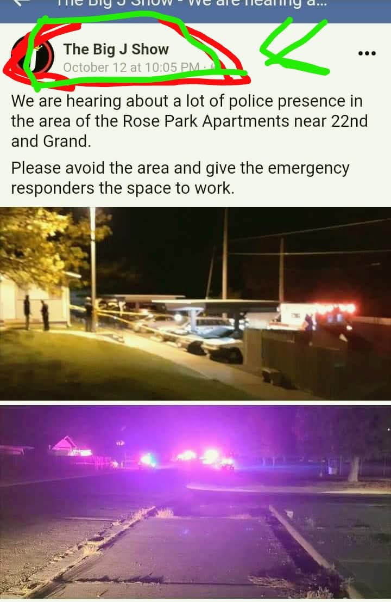
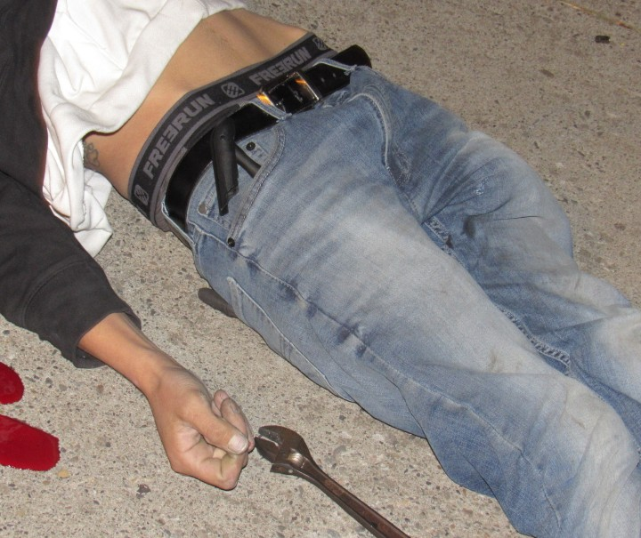

Memorial Gallery
Photos of Cole Stump and moments from our community advocacy efforts. Each image tells a story of remembrance and solidarity.
Cole's Memory
Photo 1
Cole Stump Memorial
Photo 2
Community Gathering
Photo 3
Advocacy Event
Photo 4
Family Moment

Timeline Discrepancy
Screenshot of a Facebook post by "The Big J Show" (Oct 12, 10:05 PM) reporting heavy police presence near Rose Park Apartments.

Physical Evidence: Bike Pump & Wrench
Close-up photograph showing a bicycle pump tucked into Cole's waistband and an adjustable wrench on the pavement near his hand.
Share Your Memories
Do you have photos of Cole or moments from our advocacy efforts? We welcome submissions from community members, family, and supporters.
Photo Guidelines
- • Photos should be respectful and appropriate for a memorial gallery
- • Include photo credit and date if available
- • Photos may be edited for size and quality
- • All submissions are reviewed before being added
To submit photos for the gallery, please contact us through our main contact form or reach out directly to the advocacy team.